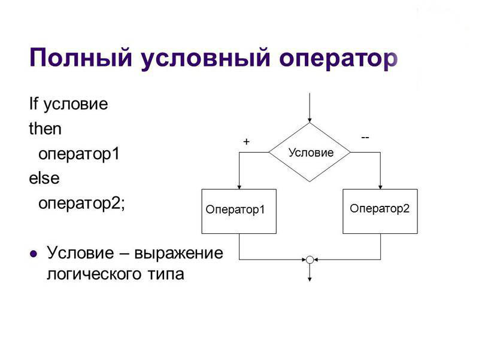
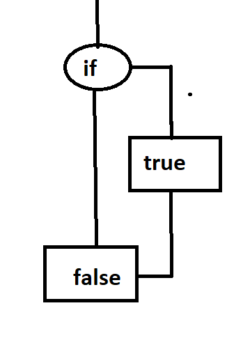
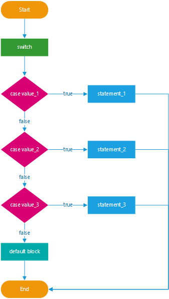
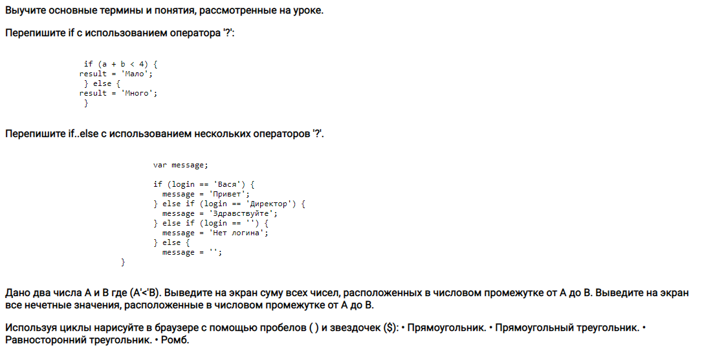

JavaSript
Условные и циклические конструкции
- Условные конструкции
- IF
- ELSE IF
- SWITCH
- Циклы
- FOR
- WHILE
- DO WHILE


Оператор if(...) вычисляет условие в скобках и, если результат true, то выполняет блок кода.

| 1 | var a = 2015 |
| 2 | if (a == 2015) { |
| 3 | alert( "Правильно!" ); |
| 4 | alert( "Вы такой умный!" )}; |
| 5 |
Оператор if может содержать необязательный блок «else» («иначе»). Выполняется, когда условие
ложно.
Иногда, нужно проверить несколько вариантов условия. Для этого используется блок else if.

| 1 | var year = prompt('В каком году появилась спецификация ECMAScript-2015?', ''); |
| 2 | if (year == 2015) { |
| 3 | alert( 'Да вы знаток!' ); |
| 4 | } else { |
| 5 | alert( 'А вот и неправильно!' )}; |
| 6 | |
| 7 |
| 1 | var year = prompt('В каком году появилась спецификация ECMAScript-2015?', ''); |
| 2 | if(year < 2015) { |
| 3 | alert( 'Это слишком рано...' ); |
| 4 | } else if (year > 2015) { |
| 5 | alert( 'Это поздновато' ); |
| 6 | } else { |
| 7 | alert( 'Верно!' ); |
| 8 | }; |
единственный оператор в JavaScript, принимающий три операнда. Он часто используется в качестве
укороченного варианта условного оператора if.
Оператор возвращает значение выражения1, если условие верно, и значение выражения2 в противном
случае.
Условие ? true : false
;
Конструкция switch заменяет собой сразу несколько if.
Она представляет собой более наглядный способ сравнить выражение сразу с несколькими вариантами.

| 1 | var a = 2 + 2; |
| 2 | |
| 3 | switch (a) { |
| 4 | case 3: |
| 5 | alert( 'Маловато' ); |
| 6 | break; |
| 7 | case 4: |
| 8 | alert( 'В точку!' ); |
| 9 | break; |
| 10 | case 5: |
| 11 | alert( 'Перебор' ); |
| 12 | break ; |
| 13 | default: |
| 14 | alert( "Нет таких значений" ); |
| 15 | } |
Циклы JavaScript обеспечивают многократное выполнение повторяющихся вычислений. Они оптимизируют
процесс написания кода, выполняя одну и ту же инструкцию или блок инструкций, образующих тело
цикла, заданное число раз (используя переменную-счётчик) или пока заданное условие истинно.
Циклы выполняют обход последовательности значений. Однократное выполнение цикла называется
итерацией.
На производительность цикла влияют количество итераций и количество операций, выполняемых в теле
цикла каждой итерации.
Цикл while - цикл с предварительной проверкой условного выражения. Инструкция внутри цикла (блок
кода в фигурных скобках) будет выполняться в случае, если условное выражение вычисляется в true.
Если первая проверка даст результат false, блок инструкций не выполнится ни разу.
| 1 | var i = 1; |
| 2 | var msg = ''; |
| 3 | while (i < 10) { |
| 4 | msg+= i + ' x 3 = ' + (i * 3) + '<br>'; |
| 5 | i++; |
| 6 | } |
| 7 | document.write(msg); |
Цикл do...while; проверяет условие продолжения после выполнения цикла. В отличие от цикла while, в do...while; тело цикла выполняется как минимум один раз, так как условие проверяется в конце цикла, а не в начале. Данный цикл используется реже, чем while, так как на практике ситуация, когда требуется хотя бы однократное исполнение цикла, встречается редко.
| 1 | |
| 2 | |
| 3 | |
| 4 | i += 1; |
| 5 | result += i + ' '; |
| 6 | } |
| 7 | document.write(result); |

Цикл for используется для выполнения итераций по элементам массивов или объектов, напоминающих массивы, таких как arguments и HTMLCollection. Условие проверяется перед каждой итерацией цикла. В случае успешной проверки выполняется код внутри цикла, в противном случае код внутри цикла не выполняется и программа продолжает работу с первой строки, следующей непосредственно после цикла.
| 1 | for (var i = 0; i < 5; i++) { |
| 2 | console.log(i + ": Hello, JavaScript!"); |
| 3 | } |
| 4 |
- Создайте две целочисленные переменные и присвойте им некоторые значения. По этим значениям, используя вложенные циклы, нарисуйте заполненный прямоугольник из звездочек.
- Напишите код, который будет спрашивать логин (prompt). Если посетитель вводит «Админ», то спрашивать пароль, если нажал отмена (escape) – выводить «Вход отменён». Пароль проверять так. Если введён пароль «Властелин», то выводить «Добро пожаловать!», иначе – «Пароль неверен», при отмене – «Вход отменён».
- 
Книга JavaScript для детей : 95 - 107 страница
Книга JavaScript для детей : 49 - 70 страница